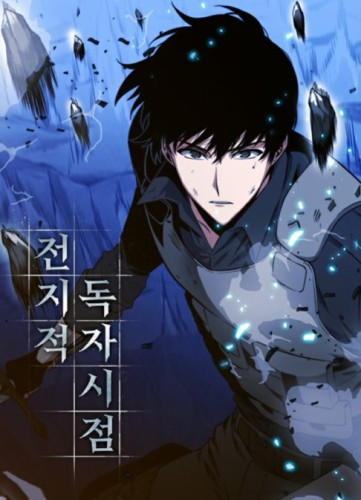
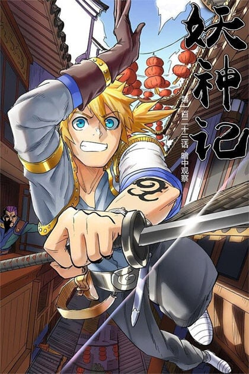
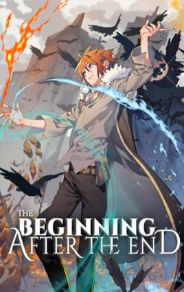
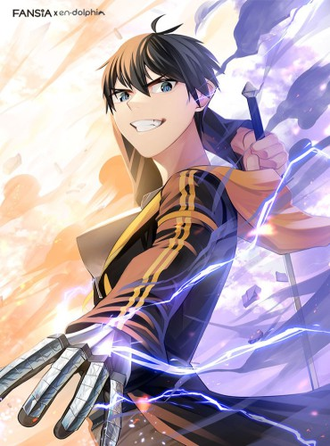

Título: Omniscient Reader's Viewpoint
Gênero(s): Fantasia, Ação, Comédia, Psicológico
Autor: Sing-Song
Fonte/Site: Manga Livre
Sinopse:
“Esse é um desenrolar que eu já conheço”. No momento em que pensei isso, o mundo foi destruído e um novo universo surgiu. A nova vida de um leitor comum começa no mundo de uma novel, a novel que só ele terminou.

Título: Tales Of Demons And Gods
Gênero(s): Artes Marciais, Ação, Shounen, Sobrenatural
Autor: Mad Snail
Fonte/Site: Manga Livre
Sinopse:
A história trata sobre a trajetória de Nie Li, o espiritualista demoníaco mais forte sendo derrotado e voltando no tempo para quando tinha apenas 13 anos.

Título: The Beginning After The End
Gênero(s): Aventura, Drama, Shounen, Ação, Sobrevivência
Autor: Turtleme
Fonte/Site: NeoxScan
Sinopse:
Grey, um rei solitário, morre envenenado por seus inimigos. Contudo, ele renasce em um mundo com raças e habilidades que jamais antes vira. Agora sob o nome de Arthur, almeja ficar forte o bastante para não cometer os mesmos erros que cometera no passado e proteger aqueles que ama.

Título: The Tutorial Is Too Hard
Gênero(s): Ação, Fantasia, Drama, Psicológico, Seinen
Autor: Gandara
Fonte/Site: Leitor.net
Sinopse:
Em um dia chato qualquer, uma mensagem apareceu, convidando-o para o tutorial. A história sobre Lee Ho Jae e sua escapada do Tutorial. Acontece que ele escolheu a pior dificuldade: Infernal.